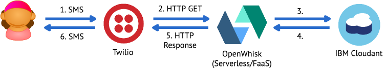
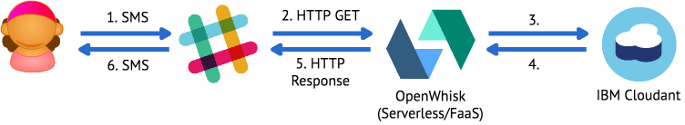
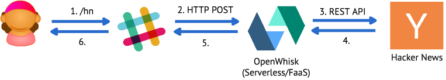
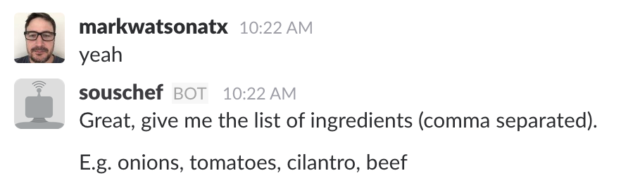
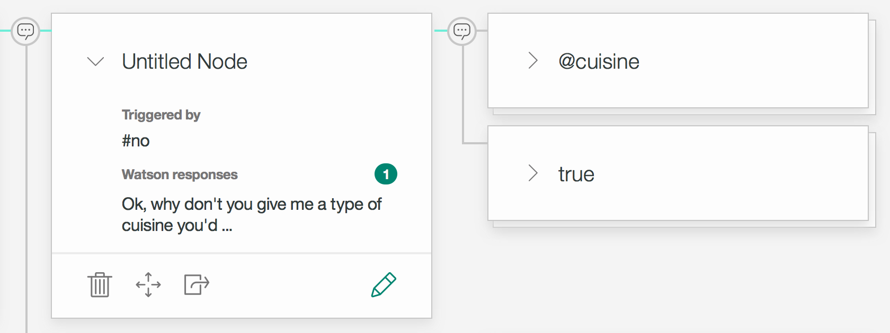

Building and Designing Bots and Bot Architectures
Bots or Chat Bots
Bot: An autonomous program on a network (especially the Internet) that can interact with computer systems or users, especially one designed to respond or behave like a player in an adventure game.
Chat Bot: A computer program designed to simulate conversation with human users, especially over the Internet.
Bot
An application or service that is consumed by exchanging messages, typically built on top of a messaging platform.
Little or no user interface development required.
It may or may not have conversational characteristics.
Example Bots:
Manage your calendar
Order a pizza
Pay your parking ticket
Automated technical support
Bot Platforms:
Bot #1
Budget Bot
Set a budget
Add and subtract from the budget
Get the budget balance
Budget Bot Platform
Twilio
Send SMS Messages to a Twilio Phone #
Identify users based on the incoming phone number
Send SMS Messages back to the user
Budget Bot
Budget Bot Requirements
Automatically register new users
Store users and budgets (in Cloudant)
Store every operation (in Cloudant)
Cloudant
Stuff about Cloudant here
Budget Bot Architecture
Twilio Programmable SMS
Request from Twilio:
https://myapplication.com/sms?From=%2B155512345678&Body=Get%20balance
&...
From = +155512345678
Body = Get balance
Determine the Operation:
if (body.indexOf('set') >= 0) {
operation = 'set';
}
else if (body.indexOf('add') >= 0) {
operation = 'add';
}
else if (body.indexOf('subtract') >= 0) {
operation = 'subtract';
}
else if (body.indexOf('get') >= 0) {
operation = 'get';
}
Determine the $ Amount:
let amount;
if (operation != 'get') {
let amountRegex = /\d*\.?\d+/g;
let amountMatches = body.match(amountRegex);
if (!amountMatches || amountMatches.length == 0) {
// return error - no amount specified
}
else if (amountMatches.length > 1) {
// return error - too many amounts specified
}
amount = Number(amountMatches[0]);
}
Load or create the Budget:
loadOrCreateBudget(cloudant, from, function (err, budget) {
// ...
});
function loadOrCreateBudget(cloudant, from, callback) {
// ...
if (! budgetExists) {
budget = {
_id: from,
balance: 0,
create_date: new Date().getTime()
};
saveBudget(cloudant, budget, callback);
}
// ...
}
Update the Budget:
if (operation == 'set') {
budget.balance = amount;
}
else if (operation == 'add') {
budget.balance += amount;
}
else if (operation == 'subtract') {
budget.balance -= amount;
}
saveBudget(cloudant, budget, function (err, budget) {
// ...
}
Log the Message:
let message = {
from: from,
body: body,
date: new Date().getTime(),
operation: operation,
amount: amount
};
saveMessage(cloudant, message, function (err, result) {
// ...
});
Return the Budget:
"Your balance is $" + (Math.round(budget.balance * 100) / 100)
Convert response to TwiML:
<?xml version="1.0" encoding="UTF-8"?>
<Response>
<Message>Your balance is $90</Message>
</Response>
Budget Bot Review
Budget Bot Review
Twilio
Command/Response
Budgets and operations stored in Cloudant
Stateless
Serverless Budget Bot
Why Serverless for Bots?
Cost Effective
Auto Scaling
OpenWhisk
Stuff about OpenWhisk
Budget Bot on Other Platforms
Slack Budget Bot
Slack
Slash Commands: Enable users to interact with external services directly from Slack.
Bot Users: Enable teams to conversationally interact with external services or your custom code.
Bot #2
Hacker News Bot
/hn Slash Command to request top stories
Return top stories with links in Slack
Hacker News Bot Architecture
Hacker News Bot Architecture
Slash Command
Slash Command
Hacker News Bot
Request from Slack:
POST https://myapplication.com/hn
token=Vsxxxxxxxxxxxxxxxxxxxxxx&command=%2Fhn
&team_id=TXXXXXXXX&team_domain=your-slack-team
&channel_id=CXXXXXXXX&channel_name=test
&user_id=UXXXXXXXX&user_name=markwatsonatx
&text=&response_url=https%3A%2F%2Fhooks.slack.com%2Fcommands%2F...
command = /hn
response_url = https://hooks.slack.com/commands/...
Initial Response to Slack:
{
"text": "Top stories coming up..."
}
Push Stories to Slack:
{
"text": "",
"attachments": [
{
"title": "Child uses sleeping mom's thumbprint to buy $250...",
"title_link": "https://www.cnet.com/news/child-uses...",
"author_name": "21 points by dvdhnt | view comments",
"author_link": "https://news.ycombinator.com/item?id=132..."
},
{
...
}
]
}
Slack Interactive Buttons:
Push Buttons with Stories to Slack:
{
"text": "",
"attachments": [
{ story1... },
{ story2... },
{
...,
"color": "#3AA3E3",
"actions": [{
"name": "hn_top_stories_more",
"text": "Load More",
"type": "button",
"value": startIndex + 10
}]
}
]
}
Slack Interactive Buttons:

Button Message Request from Slack:
payload=%7B%22actions%22%3A%5B%7B%22name%22%3A%22hn_top_stories_more%22
%2C%22value%22%3A%2210%22%7D%5D
%2C%22response_url%22%3A
%22https%3A%5C%2F%5C%2Fhooks.slack.com%5C%2Factions%5C...
{
"actions":[
{
"name": "hn_top_stories_more",
"value": "10"
}
],
...,
"response_url":"https:\/\/hooks.slack.com\/actions\/..."
}
Button Message Request from Slack:
var payload = JSON.parse(decodeURIComponent(params.payload));
var action = payload.actions[0].name;
var startIndex = Number(payload.actions[0].value);
var responseUrl = payload.response_url;
Hacker News Bot Review
Slack Slash Commands
Command/Response + Push
Stateless
Hacker News API
Hacker News API
One call to retrieve top story IDs
One call per story to retun contents
11 API calls per /hn command
100 commands = 1,100 Hacker News API requests
Hacker News Bot with Redis
Redis
Stuff about redis
Hacker News Bot with Redis
Cache top stories for 1 minute
100 cmds/min w/o Redis = 1,100 Hacker News API requests
100 cmds/min w/ Redis = 11 Hacker News API requests + 101 Redis requests
Bot Chart
| Bot #1: Budget | Bot #2: Hacker News | ||
|---|---|---|---|
| Platform | Twilio | Slack | |
| Mode | Command/Response | Command/Response + Push | |
| Stateless | Yes | Yes | |
| Services | Cloudant | Hacker News API, Redis |
Bot #3
Recipe Bot
Slack Bot User
Start a conversation with the sous-chef bot by sending it a direct message:
Tell the sous-chef what you would like to do:
Reply to the sous-chef whether or not you would like to use specific ingredients:
Specify the ingredients or cuisine you would like to cook with:
Select the recipe you’d like to cook, and sous-chef will tell you how:
Recipe Bot Architecture
Slackbot
Receive message from Slack on WebSockert
Slackbot
Code here to receive message and send to Watson Conversation
Watson Conversation
Watson Conversation combines a number of cognitive techniques to help you build and train a bot - defining intents and entities and crafting dialog to simulate conversation.
Watson Conversation Concepts
Intents
Entities
Dialog
Context
Intents
Start Cooking Intent
Entities
System Entities
Dialogs
Dialogs
Dialogs
Dialogs
Dialogs
Context
Passed between Watson Conversation and application
Keeps track of current dialog in the conversation
Context
# send message to watson conversation
watson_response = self.conversation_client.message(
workspace_id=self.conversation_workspace_id,
message_input={'text': message},
context=state.conversation_context
)
# update conversation context
state.conversation_context = watson_response['context']
Context
Add custom variables to the context for use in your bot
Context
Context
if 'is_ingredients' in state.conversation_context.keys()
and state.conversation_context['is_ingredients']:
response = self.handle_ingredients_message(state, message)
elif watson_response['entities']
and watson_response['entities'][0]['entity'] == 'cuisine':
cuisine = watson_response['entities'][0]['value']
response = self.handle_cuisine_message(state, cuisine)
Recipe Bot Review
Slack Bot User
Conversational
State needs to be managed
Nothing is persisted
Recipe Bot Persistence
Cache 3rd Party API Calls
Blah blah blah
Recipe Bot with Cloudant
Recipe Bot with Cloudant
{
"type": "user",
"name": "UXXXXXXXX",
"ingredients": [{
"name": "tomatoes",
"count": 3
}],
"cuisines": [{
"name": "italian",
"count": 4
}],
"recipes": [{
"id": "833235",
"title": "Sliced Cucumber and Tomato Salad",
"count": 2
}]
}
Favorite Recipes
Favorite Intent
Favorite Dialog
Context
if 'is_favorites' in state.conversation_context.keys()
and state.conversation_context['is_favorites']:
response = self.handle_favorites_message(state)
def handle_favorites_message(self, state):
recipes = self.recipe_store.find_favorite_recipes_for_user...
IBM Graph
Stuff about IBM Graph
Recipe Bot with IBM Graph
Visualize
Dashboard Screenshot Here
IBM Graph
Stuff about IBM Graph
Bot Chart
| Bot #1: Budget | Bot #2: HN | Bot #3: Recipe | |
|---|---|---|---|
| Platform | Twilio | Slack | Slack |
| Mode | Command/Response | Command/Response + Push | Conversational |
| Stateless | Yes | Yes | No |
| Services | Cloudant | Hacker News API | Watson Conversation, IBM Graph, Spoonacular |
Custom Bot Platform/Offline Support
Blah blah blah